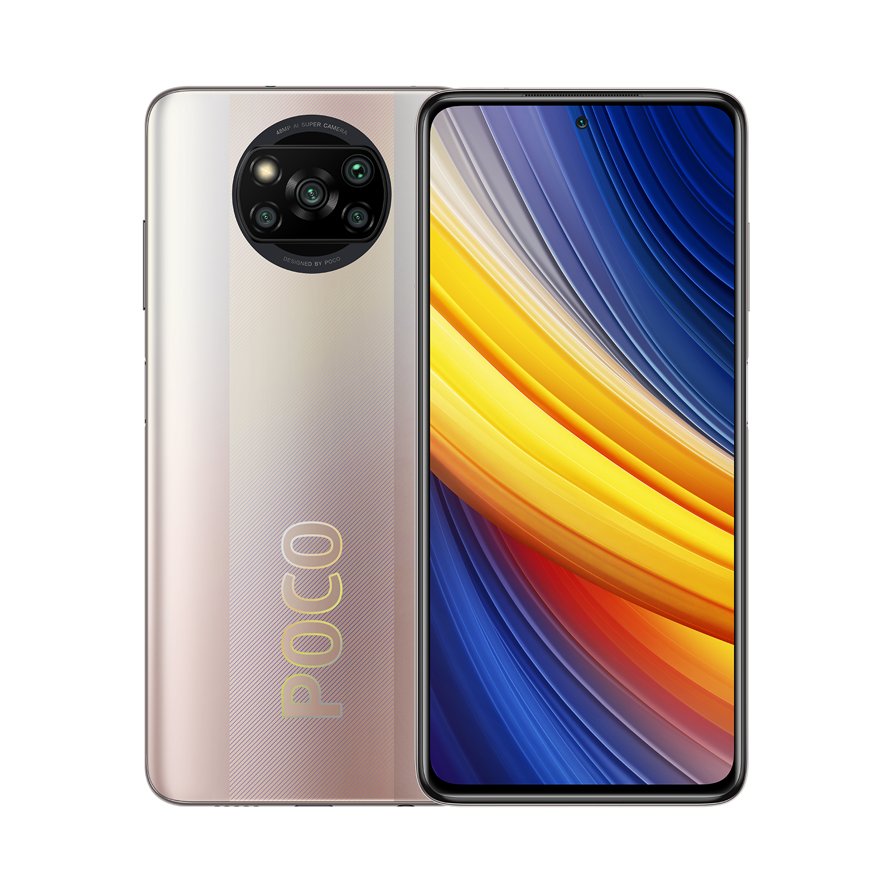

| Наименование | Цена, Руб. |
|---|---|
| Смартфон | 12000 |
Poco X3 Pro
За высокую производительность отвечает шустрый процессор с 4 ГБ оперативной памяти, а для хранения данных есть 128 ГБ. Получить отличные снимки даже при слабом освещении вы сможете благодаря камере на 64 Мп с оптической стабилизацией. В довесок к ней в гаджете предусмотрены сверхширокоугольный объектив на 8 Мп, макрокамера на 5 Мп и датчик глубины.